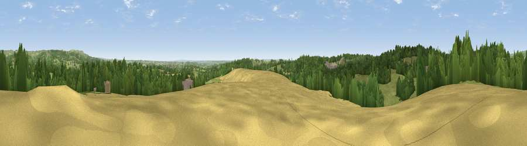

Viewpoint near Oakamoor
#20669 in England · top 26% of its area beats it · near OakamoorWhere it is
The exact computed spot (SK 04575 42375). Click the marker for map links.
The view, rendered

A 360° render of this exact spot computed from the terrain model, tree cover and land cover — summer colours, afternoon light, calibrated against photographs of famous viewpoints. Real trees, hedges and buildings will differ in detail.
The panorama
Grey silhouette: terrain skyline in each direction (720 bearings, Earth curvature and refraction included). Dashed green: skyline with trees (+15 m) and buildings (+8 m) as obstacles. Blue strip: how far the ground is visible on each bearing.
Where the view opens
Wedge length = distance to the farthest visible ground on that bearing (vegetation-aware). Rings at 10, 25 and 50 km.
What fills the view
50% grassland · 39% woodland · 8% cropland · 1% built-up
Angular shares of the visible panorama (visual magnitude), not map area. Landscape diversity 0.44 (0–1 Shannon).
Key numbers
More beautiful places nearby
The staircase of upgrades: each row has a higher view potential than everything closer. Driving times are estimates from straight-line distance, calibrated against real road routing — check an actual route before setting out.
| Place | Direction | Drive | Score |
|---|---|---|---|
| Viewpoint near Cheadle | W · 1 km | ~4 min | 61.0 |
| Viewpoint near Oakamoor | NE · 3 km | ~8 min | 62.9 |
| Viewpoint near Cauldon Lowe | NE · 6 km | ~13 min | 71.9 |
| Viewpoint near Wootton | NE · 6 km | ~13 min | 74.8 |
| Tissington Hill | NE · 15 km | ~26 min | 75.5 |
| Viewpoint near Mow Cop | NW · 24 km | ~39 min | 80.2 |
| Viewpoint near Little Wenlock | SW · 53 km | ~75 min | 84.2 |
| The Wrekin | SW · 54 km | ~76 min | 85.0 |
52.97870, -1.93331 · source: screening · position refined by local search. Computed location — check access rights before visiting.